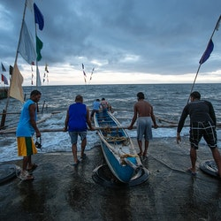
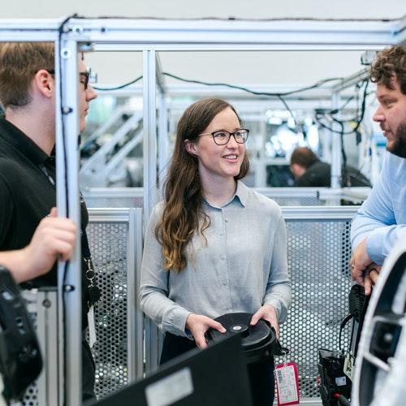
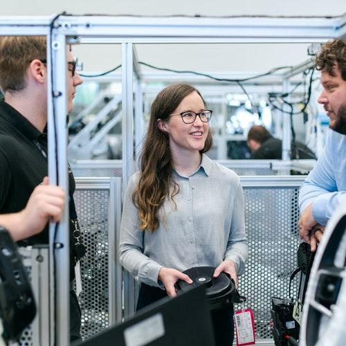
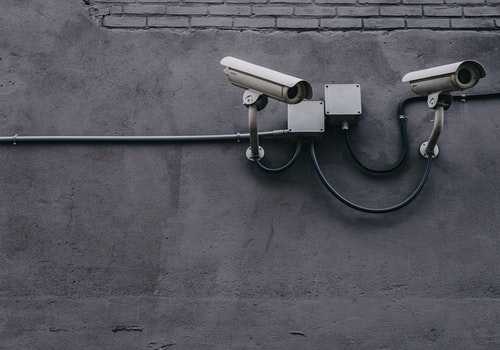

Humanitarian service

It is undoubtedly truth that as a social being we have responsibility to other. Moreover, it is common matter that man can not live alone in the earth. Because we are not cent person self-reliance. In addition, since we are social being then we have to always dependency another person. For this reason, our organization always maintain social responsibility to the society.This called CSR(Corporate Social Responsibility). And then, day by day our responsibility are expanding for deprieved people.
As armed conflicts, mass displacement, and disasters take an ever heavier toll, humanitarian intervention remains a cornerstone of global governance. Over five decades spent battling crises, the World Food Programme (WFP) has accrued vast expertise and capacity in supply chain, engineering and emergency telecommunications – often in the most challenging environments.
Humanitarian aid is material and logistic assistance to people who need help. It is usually short-term help until the long-term help by the government and other institutions replaces it. Among the people in need are the homeless, refugees, and victims of natural disasters, wars, and famines. Humanitarian relief efforts are provided for humanitarian purposes and include natural disasters and man-made disasters. The primary objective of humanitarian aid is to save lives, alleviate suffering, and maintain human dignity. It may, therefore, be distinguished from development aid, which seeks to address the underlying socioeconomic factors which may have led to a crisis or emergency. There is a debate on linking humanitarian aid and development efforts, which was reinforced by the World Humanitarian Summit in 2016. However, the conflation is viewed critically by practitioners.
Humanitarian aid is seen as "a fundamental expression of the universal value of solidarity between people and a moral imperative". [2] Humanitarian aid can come from either local or international communities. In reaching out to international communities, the Office for the Coordination of Humanitarian Affairs (OCHA)[3] of the United Nations (UN) is responsible for coordination responses to emergencies. It taps to the various members of Inter-Agency Standing Committee, whose members are responsible for providing emergency relief. The four UN entities that have primary roles in delivering humanitarian aid are United Nations Development Programme (UNDP), the United Nations Refugee Agency (UNHCR), the United Nations Children's Fund (UNICEF) and the World Food Programme (WFP).[4] Humanitarian Aid being distributed in Haiti
The International Committee of the Red Cross understands humanitarian relief as a norm in both international and non-international armed conflicts, and countries or war parties that prevent humanitarian relief are generally widely criticized.[5] According to The Overseas Development Institute, a London-based research establishment, whose findings were released in April 2009 in the paper "Providing aid in insecure environments: 2009 Update", the most lethal year for aid providers in the history of humanitarianism was 2008, in which 122 aid workers were murdered and 260 assaulted. The countries deemed least safe were Somalia and Afghanistan.[6] In 2014, Humanitarian Outcomes reported that the countries with the highest incidents were: Afghanistan, Democratic Republic of the Congo, Central African Republic, South Sudan, Sudan, Syria, Pakistan, Somalia, Yemen and Kenya.[7]
According to the Global Humanitarian Overview of OCHA, 235 million people need humanitarian assistance and protection in 2021, or 1 out of 33 people worldwide.[8]
From Humanitarian to Development Aid
When armed conflict breaks out or natural disasters strike, entire communities are affected, disrupting their day-to-day lives and long-term development prospects. Humanitarian aid is designed to save lives and alleviate suffering during and in the immediate aftermath of emergencies, whereas development aid responds to ongoing structural issues, particularly systemic poverty, that may hinder economic, institutional and social development in any given society, and assists in building capacity to ensure resilient communities and sustainable livelihoods. Both humanitarian and development aid are related, and different forms of aid often have both humanitarian and development components. Development aid can exist without humanitarian aid (in developing countries that do not have humanitarian crises), but it also often exists in addition to humanitarian aid during and after crises. For example, if an earthquake strikes a country, short-term humanitarian aid is needed. This includes the delivery of food and water, the provision of temporary shelter, as well as health services.
Linking Relief, Rehabilitation and Development
In 1995, the European Parliament issued a report entitled, Linking Relief, Rehabilitation and Development (LRRD). This document looked at aid effectiveness and the need to engage in relief efforts that reinforce development objectives, as well as development efforts that prepare communities to better withstand disasters and emergencies. LRRD looks to bridge the crucial gaps between humanitarian and development aid. At the same time, it recognizes the need to maintain a degree of separation between the two, as each offers its own expertise and comparative advantage. One of the main elements of the LRRD concept is that transitioning between humanitarian and development programming is a non-linear process. It is a continuous cycle where populations are constantly moving from relief to development or from development to relief in chaotic and unexpected progressions. According to the UN, the majority of the world’s population now lives in areas affected by natural hazards. It is expected that this proportion will continue to rise as a growing number of people are residing in seismic, coastal and other unsafe areas, often in vast and unplanned urban communities. In addition, the OECD estimates that 1.5 billion people live in countries affected by repeated cycles of violence and insecurity. Consequently, disaster risk reduction and risk management need to be addressed within development programming to mitigate the devastating consequences of unexpected conflicts and disasters. For its part, humanitarian aid should also build the proper foundation to complement long-term development objectives (see fact sheet Building Resilience). By avoiding extended humanitarian programming, which can build aid dependence, and by addressing root problems in tandem with offering relief, humanitarian aid can contribute to the alleviation of cyclical crises.
Good Practices:
The LRRD concept also underscores the need to view the transition between humanitarian and development aid as a “contiguum” rather than a continuum. Although there was a previous focus on sequencing these two types of assistance in a linear fashion, it is now understood that they must be done in parallel. In light of this, good practices include: - Increased dialogue between the two sectors at the donor, institutional and country project level, as well as between these levels; - Greater awareness of and efforts to break down programmatic silos; and - A mutual understanding between the two sectors regarding their distinct identities, values and comparative advantages in order to facilitate an effective integration.
Smaller disasters
Around the world, disasters occur frequently, more than 350 times a year. Although major emergencies are generally well publicized, the majority of disasters are local, affect comparatively fewer people and receive little media attention. But when a woman, man or child survives a disaster -- whether 1,000 or 100,000 people are affected -- their basic needs are the same and they desperately need our help. Thanks to the unique partnership with Global Affairs Canada, the Canadian Humanitarian Assistance Fund (CHAF) allows the Humanitarian Coalition to respond quickly to such emergencies. The CHAF makes funds available almost immediately, and our members, on the ground in more than 140 countries, choose the agency among them that is best placed to provide aid quickly and effectively. Donations to the Humanitarian Coalition outside of an emergency appeal are dedicated to this “disaster-ready” fund. Smaller disasters are supported by Global Affairs Canada (85%), the Humanitarian Coalition (5%) and the Humanitarian Coalition’s member agencies (10%), meaning that every $1 given to the Humanitarian Coalition is multiplied to provide $20 in life-saving aid.
Major emergencies:
When a major emergency strikes, the Humanitarian Coalition leads its members in a joint appeal – a united effort to inform Canadians and raise funds quickly and transparently, so that the most aid can be delivered to survivors in the shortest time. We rely on our corporate and media partners and supporters to disseminate the message widely and rapidly. We often receive government support through a matching fund. Together, we make donating simple for Canadians by removing competition for donations, increasing the awareness of needs and reducing the duplication of costs, meaning more help for survivors.
How we allocate your donations:
Our priority is to get help to those in need as quickly and efficiently as possible.Thanks to the generosity of Canadians, distribute. Humanitarian coordination involves bringing together humanitarian. who are Humanitarian they always keeps better contribution for everbody.There is no doubt that as a social being we everybody have to be humanitarian.Because we are not self-reliance person. So we have to be sacrifice our time and money and wealth for other. It is undoubtedly true that if we want to be happy then we have to be humanitarian for all being in the earth. It is true that who are humanitarian they are sympathetic man. In addition there is no doubt that humanitarian person all keeps important contribution for human society. It is true that all humanitarian man are well healthy family life lead in the world community.There is no doubt that humanitarian person are helpful for.
Technology for all

 

Now at present world technology is the essential part of human life. Without technology human life is quite impossible. In addition, it is absolutely truth that technology is made easy and comfortable of human life. Moreover, we everybody known that which countries are developed these are using modern technology and they also encourage learn and practice modern technology. It is common matter that which countries are least developed country, these are backward in technology sector. They do not know how to proper use technology. For this reason, we are continuing our technology service for deprived peoples. There is no doubt that using more technology ensure socio-conomic development in any nation. Moreover, it is sure that technology is made not only easy and comfortable human life, but also it helps to build free from corruption country and also society.
It is common matter that technology is efffective tools for being development for all backward country. It is also truth that there are equal reaction of every action. This truth is same applicable in technology. It is undoubtedly truth that there are both side of using technology. Such as positive and negative. But, as a human being we have to deeply consider our knowledge to use technology so that human being is benefitted throug the proper using of technology. In 2000, we helped start Technology For All-Colorado which has become the Community Computer Connection. C3-Home (c3-colorado.org). It was initially funded by Jared Polis, now governor of Colorado.
In 2005, we received a $650,000 grant from the U. S. Department of Commerce Technology Opportunity Program to create jobs as a part of a scanning business. For a time, 20 persons were trained and employed in Houston’s East End. The Technology Opportunities Program (doc.gov) In 2010, we received a $9.6 million grant from the Broadband Technology Opportunities program that was matched by over $8.2 million in private investments. With those resources from 2010-2014 we created and staffed 96 public computer centers across Texas that provided 3.7 million hours of basic computer skills training to 2.3 million persons Technology for All, Inc. | BroadbandUSA - NTIA (doc.gov)
Additionally, TFA has developed a National Science Foundation research relationship with Rice University. Since 2005, through a series of NSF funded projects we have built a public wireless network in the neighborhood around us that provides a research platform for Rice. For more information see the links below. Technology for All | Advancing Technology, Serving the Underserved (rice.edu) Today, TFA works with its partners to discover new ways to use technology as a tool to empower low-income and underserved communities. Over the years the tools may have changed, but the needs may be even more acute as underserved communities are more at-risk because of the Covid-19 pandemic.
What Is Equitable Access to Technology?
The commercialization of electronic devices may seem ubiquitous, but not all students have access to them at home. Digital access measures the level of participation of students in using digital tools (including both hardware devices and software programs). Equitable access to technology refers to all students having access to technology and information regardless of their ethnicity, socio-economic status, age, physical ability, or any other quality. It’s not only integral for opportunities to learn, but also a fundamental component in assisting students with acquiring the knowledge and skills they need to become digitally savvy citizens.
A lack of equitable access to technology and information deprives students of learning experiences and can even limit their opportunities after graduation. This inequity is further exacerbated by the need for distance learning this school year. Access to technology is more than just providing devices and connectivity to students. It also involves making sure every student has the opportunity to learn from a teacher who understands how to use technology. Why Does Equitable Access to Technology Matter? Many students lack access to technology at home. Some only have access to a smartphone and no data plan, while others have multiple devices and internet access. This disparity in digital access has been called “the homework gap” by policymakers.
A student’s socio-economic status impacts how likely they are to have access to technology. A survey by the Pew Research Center, a nonpartisan American think-tank, found that 35 percent of households in the United States with school-age children and an annual income of under $30,000 do not have access to high-speed internet. Among households earning $75,000 or more, only 6 percent lack high-speed internet. The National Center for Education Statistics conducted a survey that found only 61 percent of school-aged children had internet access at home, and yet a majority of students reported requiring the internet to complete assignments.
Educators are well aware of the homework gap and how important it is for students to have equitable access to technology. Yet much more could be done. A recent infrastructure survey from the Consortium of School Networking, an association and advocacy group that promotes emerging technologies with decision-makers in K-12 education, found that less than 10 percent of school district leaders felt that 100 percent of their students had access to technology outside of school. Technology access is becoming a Catch-22 for students. Increasingly, schools and school districts are promoting the use of digital tools for assignments, especially with part of the 2020-2021 school year moving to online learning. However, students may not be able to get access to the technology required while at home.
We support women on maternity leave and when they return, so that they can resume their careers, because being a parent should not be a career ending choice. And to be blunt; women need role models in the tech sphere. They need to feel that they can shape the world of the future and be part of the conversation. Technology, I firmly believe, must work for everyone, and must represent the requirements and desires of us of all. Women need to be an integral part of our shared technological progress. This is why it’s important that stories like that of Ms He are heard and shared.
The barriers to women accessing and having careers in the tech industry must be broken down. This needs to start at the grass roots level, through education and training, giving girls and young women the opportunities and skills to enter the tech world. Sometimes the fight for equality starts way before entering the professional world. It starts in schools and colleges and on social media, when our daughters and sons get their first mobile phones.
It’s as simple as this: our daughters, just like our sons, need to feel that they can be a part of this new tech world, not just consumers of it. I believe that if we are to truly leave no one behind in this fourth industrial revolution, then women must be at the forefront. Our industry has a long way to go in bringing true equality to the tech sector, but Huawei will play its part in trying to encourage and inspire young girls and women to become scientists, tech experts, innovators and leaders of the digital age. A journey of a thousand miles begins with a single step.
Earning Trust: How Businesses Can Build A Positive Brand Reputation

When you are growing your business, building a positive brand reputation for your company is so important. Customers want to interact with brands that are active in their community, kind to both customers and employees and are known for their personality and relatability. How can you build a positive brand reputation for your business? Read on to find out.
Great customer service is always important for any company, especially if you are trying to build a positive brand reputation. Treating your clients well and listening to their feedback is absolutely vital in building a loyal audience, and a good customer service interaction goes a long way. People are likely to share stories of great customer service experiences and recommend your company to friends and family, boosting your brand and potentially directing new customers to you.
Build trust between yourself and your customers and keep any promises you make. For example, if you are offering 24-hour delivery, make sure that is achievable for all customers, as every single late delivery will massively hurt your brand trust and reputation. Customers will leave reviews, particularly about bad experiences or broken trust, so try to reduce these instances as much as possible. Most customers who are considering purchasing from a new company will first look at reviews online, so having great customer experiences is essential to improve your reputation and draw in new customers.
Occasionally, these bad reviews might come along anyway. When there are problems that arise, don’t bury your head in the sand. Take action and take responsibility. Make it up to customers where you can, and hear them out. Be calm and fair when interacting with customers lodging complaints of any kind. On a similar note, customers like brands that are trustworthy and human. Presenting a human attitude, rather than putting on a cold business front can really make customers warm to you, and relate a lot more. Be friendly and genuine in all customer interactions including marketing and advertisements. Social media is a great place to show the individuality of not just your brand but also your staff. Sharing personal experiences and using humour and honesty to reach your customers is a great way to improve your likeability.
Your social media pages are the perfect place to really try this out, with more and more of daily life existing online now, a great digital marketing strategy is essential. Post regular updates, but don’t be robotic. Create fun and relatable campaigns, and monitor your social media pages regularly. Encourage customers to interact and send you any feedback, which should be checked often to increase response times, which in turn increases trust. Ensure your staff have a strong product knowledge and are well-trained on everything they are selling. The importance of product knowledge should never be underestimated. It not only allows your employees to sell your product or service much more easily and naturally, but customers tend to respond positively to staff who are enthusiastic and knowledgeable about the product they are selling. They can better explain and advertise a product, and enthusiasm from staff will have an extremely positive effect on customers.
As well as training your staff, make sure to treat them really well. Being a good employer is essential if you are trying to build a positive brand reputation, especially with the rise in popularity of sites such as glassdoor, where employees can rate and review employers. Make sure you treat your employees well so that will encourage friends and other industry professionals to work for you. Be part of the community Wherever you can, take opportunities to help to grow and expand your community and the wider industry. This will help to improve your reputation amongst your peers. Get involved in community projects, make sure to set up a presence on professional networks such as LinkedIn and attend networking and industry events to share your expertise and connect with like-minded people.
Similarly, get involved with your local community and donate to charities and projects that are important to you. This will not only help you to reach new audiences but can be a marker to potential customers of how much you care. how to put a sustainable foot forward. This will be a great look for your company and will entice customers who are trying to be more eco-conscious themselves.
Related Posts What Technologies Can Help A Business Grow Online In 2022? 5 Security Tips You Must Consider To Keep Your Business Safe A Basic Guide To Unsupervised Machine Learning Signs You Should Consider Hiring A Hacker For Your Business Best Hiring Advice For Growing Tech Companies How To Prepare for A Cookieless World as A Marketer 7 Benefits of IoT Sim Cards Over Traditional Ones Quick Hacks To Grow Your Conversions This Year Earning Trust: How Businesses Can Build A Positive Brand Reputation 5 Best Free Video Editors for Teachers Tech Tips To Get Started With Direct-To-Garment Printing Business ‘LEADING CHANGE’ – HARVARD BUSINESS SCHOOL COURSE How To Create An Impressive Facebook Marketing Strategy How Technology Can Benefit Property Management Companies in 2022 7 of the best gadgets to make driving safer Hour of Code
How To Use Technology Within Your New Business 3 Tips for Building a Career in the Technology Sector. Technology has progressed rapidly over the last century. As a result, the business and job market revolving around technology has become hyper-competitive. Businesses require skilled workers in their companies to progress in this market for continuously. partnering with local community organizations, educational institutions, corporations, foundations.As we work together. we create educational, economic and personal opportunities for underserved, vulnerable
Technology has changed immensely in the 25 years since then. One could argue that it's continued to improve our lives, keeping us more connected to information, entertainment and each other. You also could argue just the opposite, but either way, there are a few gadgets and technologies that have changed our lives and the world forever. Here are 25 influential advancements from the past quarter century.
Armed with powerful features and able to run thousands of apps, they squeezed more functionality into one device than we'd ever seen before. The mobile revolution also brought the death of point-and-shoot cameras, dashboard GPS units, camcorders, PDAs and MP3 players. Now we use smartphones to shop, as a flashlight and sometimes even to call people. It's tech's version of the Swiss Army knife. Now, 13 years after the iPhone's introduction, more than 3.5 billion people around the world use a smartphone, nearly half the Earth's population. You may even be using one to read this article. gettyimages-1029514602
The smartphone and the internet we use today wouldn't have been possible without wireless communication technologies such as Wi-Fi. In 1995 if you wanted to "surf" the internet at home, you had to chain yourself to a network cable like it was an extension cord. In 1997, Wi-Fi was invented and then.It is true that all technology for using human being life comfortable. It gives us happiness and simple and gorgeous life. No more than . Now we are live with technology for our mental recreation. It is true that technology also help us in different way. Such as: education sector, economic sector and communication sector, and all over development of the country and nation.
What actually does “Cutting-Edge Technology” mean? At "Technology For All" we apply the same methodology effectively, to make you resourceful with the trending technologies to be adept in making learning accessible and affordable for individuals and so they gain vast knowledge in every advanced“Cutting-Edge Technology” We belive in our motto "TFA - where quality training is affordable" and are successfully living upto it.
News for world
It is very interesting matter that world news helps us always to know different types of information from country to country different sector situation. For example: economic, education, technology and culture , business and sports and also political situation. There is no doubt that as a human being we have to communication to other.
World news or international news or even foreign coverage is the news media jargon for news from abroad, about a country or a global subject. For journalism, it is a branch that deals with news either sent by foreign correspondents or news agencies, or – more recently – information that is gathered or researched through distance communication technologies, such as telephone, satellite TV or the internet.
Although in most of the English-speaking world this field is not usually regarded as a specific specialization for journalists, it is so in nearly all the world. Particularly in the United States, there is a blurred distinction between world news and "national" news when they include directly the national government or national institutions, such as wars in which the US are involved or summits of multilateral organizations in which the US are a member. At the birth of modern journalism, most news were foreign, as registered by the courants of the 17th century in West and Central Europe, such as the Daily Courant (England), the Nieuwe Tijudinger (Antwerp), the Relation (Strasbourg), the Avisa Relation oder Zeitung (Wolfenbüttel) and the Courante Uyt Italien, Duytsland & C. (Amsterdam). Since these papers were aimed at bankers and merchants, they brought mostly news from other markets, which usually meant other nations. In any case, it is worthy to remark that nation-states were still incipient in 17th-century Europe. From the 19th century on, with newspapers already established in Europe, the United States and a few other countries, innovations in telecommunications such as the telegraph made news from abroad easier to be spread. The first news agencies were then founded, like AFP (France), Reuters (UK), Wolff (currently DPA, Germany) and the AP (US). War journalism is one of the best known subfields of world news (although war coverage can be national for the media of belligerent countries themselves).
Different types news reporter.
A correspondent is a reporter who contributes news or commentary to a publication or media network, often from a distant location. Foreign correspondents typically report from countries other than their own and focus on specific “beats” (e.g., the drug trade in Southeast Asia or politics in Africa). A foreign correspondent can be “roving” — following news events or topics of interest wherever the stories take them. If you’re excited by the prospect of trekking the globe to uncover and report on important news, you’ll need some essential skills. First and foremost, a foreign correspondent needs to be a subject-matter expert in the field in which they report; translating their broad understanding and specific insights in a way that makes sense to a lay audience. Strong storytelling relies on excellent communication skills, and that often means breaking down complex topics into clear and compelling reporting. Foreign correspondents have different specialties. War correspondents report on the quickly evolving circumstances of war in places like Syria. Political news correspondents, like NPR’s Lucian Kim in Russia, report on evolving politics and tensions across the globe. Correspondents like Chika Oudah combine the stories of citizens of faraway countries with coverage of political and social issues. Foreign correspondents often report for a large media network, but they can also be freelance workers, pitching story ideas to a variety of different media outlets. Some foreign correspondents work in media-friendly countries with access to those in power, while others are challenged by assignments in areas of the world considerably less friendly to journalists. What a foreign correspondent does is important. If you pursue this career, you take on the responsibility of representing political events and social movements in cultures other than your own in a respectful, accurate, and objective manner. This kind of reporting enables your audience to better understand what’s happening globally. It may even spur them to take action to make the world better. Steps to Become a Foreign Correspondent If the challenge of illuminating people about world events inspires you, education and training are crucial to success in this exciting but competitive field. When considering how to become a foreign correspondent, there are a few essential steps. Obtain the Right Education A Bachelor of Arts in International Studies from an accredited institution such as Maryville University provides a solid foundation for understanding the complexities of other regions and cultures. Many international studies programs allow you to specialize, focusing on one area of interest such as a region of the world, or a certain language or culture. You can also focus on a specific topic, like global economics or politics. An international studies degree is not only helpful in gaining a deeper understanding of global and cultural issues, but also in helping hone vital communication skills. Jump Into a Foreign Environment It’s worth supplementing your education with real-world experiences in a foreign environment. This can happen through a study abroad program, either while earning your degree or after graduation. Taking the time to immerse yourself in a foreign culture allows you to adapt to new experiences, gain more intercultural skills, and learn a new language. While studying abroad, students are able to continue sharpening their communication skills and expand their understanding of global issues during formal study. They can then apply their classroom skills to their work in international settings. Students aspiring to become foreign correspondents might do well to study journalism during their study abroad to experience the realities of reporting from another country. Foreign Correspondent Salaries The U.S. Bureau of Labor Statistics (BLS) includes foreign correspondents among the category of reporters, correspondents, and broadcast news analysts. Within that group, it reported in 2018 that the median salary for reporters and correspondents was approximately $41,000. The median salary for broadcast news analysts was over $66,000. Writing ability is important for foreign correspondents. Courses in international studies such as world literature help students become more effective writers and communicators. In addition, those who are comfortable reporting in front of a camera or microphone via television, radio, podcasts, YouTube videos, or other media outlets may see an increase in their market value. The lowest 10% of earners in the category of reporters, correspondents, and broadcast news analysts made under $23,490, according to the BLS, while the top 10% earned more than $200,180. PayScale, which sources its data directly from workers, reports the median salary for foreign correspondents at $60,000. Employment Outlook for Foreign Correspondents When considering how to become a foreign correspondent, remember the job market for journalists is competitive. This is partly because numerous once-large media outlets are shifting to a contracting model for their reporting, merging, or shutting down. While the average large American broadsheet newspaper used to have numerous foreign correspondents, now only a handful of national papers do. The BLS projects that between 2016 and 2026, the market for broadcast news analysts will remain steady, while the number of reporting and correspondent jobs will dip only slightly. Not only that, the BLS projects a growth of 6% for writers in the field of media and communication. Studying intercultural communication and taking courses in literature offered in an international studies degree program can help boost future foreign correspondents’ abilities in this field. Many of today’s journalists are freelancers with greater control over their own content and an ability to forge their own relationships with various news outlets. Today, whatever the arena, opportunities exist for candidates who are motivated, hardworking, and able to navigate the changing dynamics of the foreign news market. Learn More About How to Become a Foreign Correspondent Foreign correspondents travel the world, report on key issues, and meet people of other cultures and walks of life, all while making a difference to our shared future. See how Maryville University’s online Bachelor of Arts in International Studies can be the first step toward an exciting, influential career. Learn more and apply to earn your degree today. Sources Columbia Journalism Review, “A Celebrated Foreign Correspondent Built His Life Work On Detachment. “Then Everything Changed.” MediaShift, “10 Tips for Training the Next Generation of Foreign Correspondents” PayScale, “Foreign Correspondent, News” Poynter, “Want To Be a Foreign Correspondent? She’s Got Some Heartfelt Advice To Offer” U.S. Bureau of Labor Statistics, Reporters, Correspondents and Broadcast News U.S. Bureau of Labor Statistics, Writers and Authors
News Gathering with New Technology Technology innovations have changed the ways foreign news is gathered and disseminated and the way people receive the news. In earlier times, a foreign correspondent was a resident in a foreign land who sent letters or reports carried home by ship or by mail. Recently computer technology and satellites have meant that the flow of news from abroad into news organizations has increased exponentially. Foreign correspondents now use laptop computers connected by modems to phone lines (also by wireless means) to get their stories out—whether from a golf match, a court trial, or a foreign civil war. Foreign correspondents are no longer isolated, but are in daily communication with their editors and other reporters by Internet or cell phones. This has given overseas news an immediacy it never had before. For television reporting from abroad, a major advance was the highly portable satellite uplinks, which can be disassembled and flown to the site of a major story in order to feed back live reports via satellite. This kind of “flyaway” dish can become a temporary CNN or ABC bureau in just the time it takes to get one on the scene. affecting daily journalism has been facsimile production and distribution of national and international newspapers.Another use of satellites affecting daily journalism . It is undoubtedly true that journalism is the great profession. It helps to remove corruption from the society and the country. In addition, most of the democratic country in the world always follow democratic governance rules and regulation for good governance education and all over country social development.
n a complex, fast-paced world of soundbites, knee-jerk opinions and information overload, BBC Future provides something different: a home for slowing down, delving deep and shifting perspectives. We look for answers to the issues facing the world in science. You’ll find stories here on almost every topic that matters. Psychology. Food. Climate change. Health. Social trends. Technology. What links them all is our approach. Through evidence-based analysis, original thinking, and powerful storytelling, we shine a light on the hidden ways that the world is changing – and provide solutions for how to navigate it. Energised by the everyday, we think no topic is too small to be fascinating. Inspired by obstacles, we believe no subject is too overwhelming to tackle. We're the proud recipients of both the 2019 Webby Award for best writing and the 2019 Lovie Award for best writing. Our writing also won two Medical Journalist Association Awards in 2021 while another piece was highly commended by the judges in the year of 2022. We will be happy in the earth for all person information sharing data in our country and nation. For healthy planning for country development sector .
Shares this: